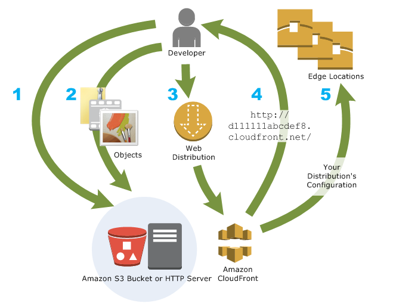
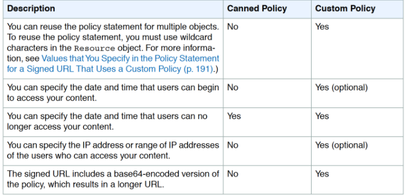

L13 AWS CloudFront
1 CloudFront
- CloudFront is a fully managed, fast content delivery network (CDN) service that speeds up the distribution of static, dynamic web, or streaming content to end-users.
- CloudFront delivers the content through a worldwide network of data centers called edge locations or Point of Presence (POP).
- CloudFront securely delivers data, videos, applications, and APIs to customers globally with low latency, high transfer speeds, all within a developer-friendly environment.
- CloudFront gives businesses and web application developers an easy and cost-effective way to distribute content with low latency and high data transfer speeds.
- CloudFront speeds up the distribution of the content by routing each user request to the edge location that can best serve the content thus providing the lowest latency (time delay).
- CloudFront dramatically reduces the number of network hops that users’ requests must pass through, which helps improves performance, provide lower latency and higher data transfer rates.
- CloudFront is a good choice for the distribution of frequently accessed static content that benefits from edge delivery – like popular website images, videos, media files, or software downloads
2 CloudFront Benefits
- CloudFront eliminates the expense and complexity of operating a network of cache servers in multiple sites across the internet and eliminates the need to over-provision capacity in order to serve potential spikes in traffic.
- CloudFront also provides increased reliability and availability because copies of objects are held in multiple edge locations around the world.
- CloudFront keeps persistent connections with the origin servers so that those files can be fetched from the origin servers as quickly as possible.
- CloudFront also uses techniques such as collapsing simultaneous viewer requests at an edge location for the same file into a single request to the origin server reducing the load on the origin.
- CloudFront offers the most advanced security capabilities, including field-level encryption and HTTPS support.
- CloudFront seamlessly integrates with AWS Shield, AWS Web Application Firewall, and Route 53 to protect against multiple types of attacks including network and application layer DDoS attacks.
3 Configuration & Content Delivery

3-1 Configuration
- Origin servers need to be configured to get the files for distribution. An origin server stores the original, definitive version of the objects and can be an AWS hosted service for e.g. S3, EC2, or an on-premise server
- Files or objects can be added/uploaded to the Origin servers with public read permissions or permissions restricted to Origin Access Identity (OAI).
- Create a CloudFront distribution, which tells CloudFront which origin servers to get the files from when users request the files
- CloudFront sends the distribution configuration to all the edge locations
- The website can be used with the CloudFront provided domain name or a custom alternate domain name
- An origin server can be configured to limit access protocols, caching behavior, add headers to the files to add TTL or the expiration time
3-2 Content delivery to Users
- When a user accesses the website, file, or object – the DNS routes the request to the CloudFront edge location that can best serve the user’s request with the lowest latency
- CloudFront returns the object immediately if the requested object is present in the cache at the Edge location
- If the requested object does not exist in the cache at the edge location, CloudFront requests the object from the origin server and returns it to the user as soon as it starts receiving it
- When the object reaches its expiration time, for any new request CloudFront checks with the Origin server for any latest versions, if it has the latest it uses the same object. If the Origin server has the latest version the same is retrieved, served to the user, and cached as well
4 Delivery Methods
4-1 Web distributions
- supports both static and dynamic content for e.g. HTML, CSS, js, images, etc using HTTP or HTTPS.
- supports multimedia content on-demand using progressive download and Apple HTTP Live Streaming (HLS).
- supports a live event, such as a meeting, conference, or concert, in real-time. For live streaming, distribution can be created automatically using an AWS CloudFormation stack.
- origin servers can be either an S3 bucket or an HTTP server, for e.g., a web server or an AWS ELB, etc.
4-2 CloudFront Origins
- Each origin is either an S3 bucket, a MediaStore container, a MediaPackage channel, or a custom origin like EC2 instance or an HTTP server
- For the S3 bucket, use the bucket URL or the static website endpoint URL, and the files either need to be publicly readable or secured using OAI.
- Origin restrict access, for S3 only, can be configured using Origin Access Identity to prevent direct access to the S3 objects
- For the HTTP server as the origin, the domain name of the resource needs to be mapped and files must be publicly readable.
- Distribution can have multiple origins for each bucket with one or more cache behaviors that route requests to each origin. Path pattern in a cache behavior determines which requests are routed to the origin (S3 bucket) that is associated with that cache behavior
5 Cache Behavior Settings
5-1 Path Patterns
- Path Patterns help define which path the Cache behavior would apply to.
- A default (*) pattern is created and multiple cache distributions can be added with patterns to take priority over the default path
5-2 Viewer Protocol Policy
- Viewer Protocol policy can be configured to define the allowed access protocol.
- Between CloudFront & Viewers, cache distribution can be configured to either allow
- HTTPS only – supports HTTPS only
- HTTP and HTTPS – supports both
- HTTP redirected to HTTPS – HTTP is automatically redirected to HTTPS
5-3 HTTPS Connection
- Between CloudFront & Origin, cache distribution can be configured to require that CloudFront fetches objects from the origin by using HTTPS or CloudFront uses the protocol that the viewer used to request the objects.
- For S3 as origin,
- For website, the protocol has to be HTTP as HTTPS is not supported
- For S3 bucket, the default Origin protocol policy is Match Viewer and cannot be changed. So When CloudFront is configured to require HTTPS between the viewer and CloudFront, it automatically uses HTTPS to communicate with S3.
-
CloudFront can also be configured to work with HTTPS for alternate domain names by using:-
- Serving HTTPS Requests Using Dedicated IP Addresses
- CloudFront associates the alternate domain name with a dedicated IP address, and the certificate is associated with the IP address. when a request is received from a DNS server for the IP address,
- CloudFront uses the IP address to identify the distribution and the SSL/TLS certificate to return to the viewer
- This method works for every HTTPS request, regardless of the browser or other viewer that the user is using. * Additional monthly charge (of about $600/month) is incurred for using a dedicated IP address
- Serving HTTPS Requests Using SNI
- SNI custom SSL relies on the SNI extension of the TLS protocol, which allows multiple domains to be served over the same IP address by including the hostname, viewers are trying to connect to
- With SNI method, CloudFront associates an IP address with the alternate domain name, but the IP address is not dedicated
- CloudFront can’t determine, based on the IP address, which domain the request is for as the IP address is not dedicated
- Browsers that support SNI automatically gets the domain name from the request URL & adds it to a new field in the request header.
- When CloudFront receives an HTTPS request from a browser that supports SNI, it finds the domain name in the request header and responds to the request with the applicable SSL/TLS certificate.
- Viewer and CloudFront perform SSL negotiation, and CloudFront returns the requested content to the viewer.
- Older browsers do not support it
- SNI Custom SSL is available at no additional cost beyond standard CloudFront data transfer and request fees
- Serving HTTPS Requests Using Dedicated IP Addresses
-
For End-to-End HTTPS connections certificate needs to be applied both between the Viewers and CloudFront & CloudFront and Origin, with the following requirements
- HTTPS between viewers and CloudFront
- Certificate that was issued by a trusted certificate authority (CA) such as Comodo, DigiCert, or Symantec;
- Certificate provided by AWS Certificate Manager (ACM);
- Self-signed certificate.
- HTTPS between CloudFront and a custom origin
- If the origin is not an ELB load balancer, the certificate must be issued by a trusted CA such as Comodo, DigiCert, or Symantec.
- For ELB load balancer, certificate provided by ACM can be used
- HTTPS between viewers and CloudFront
6 Allowed HTTP methods
- CloudFront supports GET, HEAD, OPTIONS, PUT, POST, PATCH, DELETE to get, add, update, and delete objects, and to get object headers.
- GET, HEAD methods to use to get objects, object headers
- GET, HEAD, OPTIONS methods to use to get objects, object headers or retrieve a list of the options supported from the origin
- GET, HEAD, OPTIONS, PUT, POST, PATCH, DELETE operations can also be performed for e.g. submitting data from a web form, which are directly proxied back to the Origin server
- CloudFront only caches responses to GET and HEAD requests and, optionally, OPTIONS requests. CloudFront does not cache responses to PUT, POST, PATCH, DELETE request methods and these requests are directed to the origin.
- PUT, POST HTTP methods also help for accelerated content uploads, as these operations will be sent to the origin e.g. S3 via the CloudFront edge location, improving efficiency, reducing latency, and allowing the application to benefit from the monitored, persistent connections that CloudFront maintains from the edge locations to the origin servers.
7 Field Level Encryption Config
- CloudFront can enforce secure end-to-end connections to origin servers by using HTTPS.
- Field-level encryption adds an additional layer of security that helps protect specific data throughout system processing so that only certain applications can see it.
8 CloudFront Edge Caches
Control the cache max-age
- To increase the cache hit ratio, the origin can be configured to add a
Cache-Control: max-agedirective to the objects. - Longer the interval less frequently it would be retrieved from the origin
Caching Based on Query String Parameters
-
CloudFront can be configured to cache based on the query parameters
- None (Improves Caching) – if the origin returns the same version of an object regardless of the values of query string parameters.
- Forward all, cache based on whitelist – if the origin server returns different versions of the objects based on one or more query string parameters. Then specify the parameters that you want CloudFront to use as a basis for caching in the Query String Whitelist field.
- Forward all, cache based on all – if the origin server returns different versions of the objects for all query string parameters.
-
Caching performance can be improved by
- Configure CloudFront to forward only the query strings for which the origin will return unique objects.
- Using the same case for the parameters’ values for e.g. parameter value A or a, CloudFront would cache the same request twice even if the response or object returned is identical
- Using the same parameter order for e.g. for request a=x&b=y and b=y&a=x, CloudFront would cache the same request twice even though the response or object returned is identical
Caching Based on Cookie Values
- CloudFront can be configured to cache based on cookie values.
- By default, it doesn’t consider cookies while caching on edge locations
- Caching performance can be improved by
- Configure CloudFront to forward only specified cookies instead of forwarding all cookies for e.g. if the request has 2 cookies with 3 possible values, CloudFront would cache all possible combinations even if the response takes into account a single cookie
- Cookie names and values are both case sensitive so better to stick with the same case
- Create separate cache behaviors for static and dynamic content, and configure CloudFront to forward cookies to the origin only for dynamic content for e.g. for CSS files, the cookies do not make sense as the object does not change with the cookie value
- If possible, create separate cache behaviors for dynamic content for which cookie values are unique for each user (such as a user ID) and dynamic content that varies based on a smaller number of unique values reducing the number of combinations
Caching Based on Request Headers
- CloudFront can be configured to cache based on request headers
- By default, CloudFront doesn’t consider headers when caching the objects in edge locations.
- CloudFront configured to cache based on request headers, does not change the headers that CloudFront forwards, only whether CloudFront caches objects based on the header values.
- Caching performance can be improved by
- Configure CloudFront to forward and cache based only on specified headers instead of forwarding and caching based on all headers.
- Try to avoid caching based on request headers that have large numbers of unique values.
- CloudFront is configured to forward all headers to the origin, CloudFront doesn’t cache the objects associated with this cache behavior. Instead, it sends every request to the origin
- CloudFront caches based on header values, it doesn’t consider the case of the header name but considers the case of the header value
9 Object Caching & Expiration
- Object expiration determines how long the objects stay in a CloudFront cache before it fetches it again from Origin
- Low expiration time helps serve content that changes frequently and high expiration time helps improve performance and reduce the origin load.
- By default, each object automatically expires after 24 hours
- After expiration time, CloudFront checks if it still has the latest version
- If the cache already has the latest version, the origin returns a 304 status code (Not Modified).
- If the CloudFront cache does not have the latest version, the origin returns a 200 status code (OK), and the latest version of the object
- If an object in an edge location isn’t frequently requested, CloudFront might evict the object, remove the object before its expiration date, to make room for objects that have been requested more recently.
- For Web distributions, the default behavior can be changed by
- for the entire path pattern, cache behavior can be configured by the setting Minimum TTL, Maximum TTL, and Default TTL values
- for individual objects, the origin can be configured to add a Cache-Control max-age or Cache-Control s-maxage directive, or an Expires header field to the object.
- AWS recommends using Cache-Control max-age directive over Expires header to control object caching behavior
- CloudFront uses only the value of Cache-Control max-age , if both the Cache-Control max-age directive and Expires header is specified
- HTTP Cache-Control or Pragma header fields in a GET request from a viewer can’t be used to force CloudFront to go back to the origin server for the object
- By default, when the origin returns an HTTP 4xx or 5xx status code, CloudFront caches these error responses for five minutes and then submits the next request for the object to the origin to see whether the requested object is available and the problem has been resolved
10 Restrict Viewer Access
10-1 Serving Private Content
-
To securely serve private content using CloudFront
- Require the users to access the private content by using special CloudFront signed URLs or signed cookies with following restrictions
- an end date and time, after which the URL is no longer valid
- start date time, when the URL becomes valid
- ip address or range of addresses to access the URLs
- Require that users access the S3 content only using CloudFront URLs, not S3 URLs. Requiring CloudFront URLs isn’t required, but recommended to prevent users from bypassing the restrictions specified in signed URLs or signed cookies.
- Require the users to access the private content by using special CloudFront signed URLs or signed cookies with following restrictions
-
Signed URLs or Signed Cookies can used with CloudFront using HTTP server as an origin. It requires the content to be publicly accessible and care should be taken to not share the direct URL of the content
-
Restriction for Origin can be applied by
- For S3, using Origin Access Identity to grant only CloudFront access using Bucket policies or Object ACL, to the content and removing any other access permissions
- For HTTP server, custom header can be added by CloudFront which can be used at Origin to verify the request has come from CloudFront
-
Trusted Signer
-
To create signed URLs or signed cookies, at least one AWS account (trusted signer) is needed that has an active CloudFront key pair
- Once AWS account is added as trusted signer to the distribution, CloudFront starts to require that users use signed URLs or signed cookies to access the objects.
- Private key from the trusted signer’s key pair to sign a portion of the URL or the cookie. When someone requests a restricted object, CloudFront compares the signed portion of the URL or cookie with the unsigned portion to verify that the URL or cookie hasn’t been tampered with. CloudFront also validates the URL or cookie is valid for e.g, that the expiration date and time hasn’t passed.
- Each Trusted signer AWS accounts used to create CloudFront signed URLs or signed cookies must have its own active CloudFront key pair, which should be frequently rotated
- A maximum of 5 trusted signers can be assigned for each cache behavior or RTMP distribution
10-2 Signed URLs vs Signed Cookies
- CloudFront signed URLs and signed cookies help to secure the content and provide control to decide who can access the content.
-
Use signed URLs in the following cases:
- to restrict access to individual files, for e.g., an installation download for the application.
- users using a client, for e.g. a custom HTTP client, that doesn’t support cookies
-
Use signed cookies in the following cases:
- provide access to multiple restricted files, for e.g., all of the video files in HLS format or all of the files in the subscribers’ area of a website.
- don’t want to change the current URLs.
-
Signed URLs take precedence over signed cookies, if both signed URLs and signed cookies are used to control access to the same files and a viewer uses a signed URL to request a file, CloudFront determines whether to return the file to the viewer based only on the signed URL.
10-3 Canned Policy vs Custom Policy
- Canned policy or a custom policy is a policy statement, used by the Signed URLs, helps define the restrictions for e.g. expiration date and time

- CloudFront validates the expiration time at the start of the event. If user is downloading a large object, and the url expires the download would still continue and the same for RTMP distribution.
- However, if the user is using range GET requests, or while streaming video skips to another position which might trigger an other event, the request would fail.
11 Serving Compressed Files
- CloudFront can be configured to automatically compress files of certain types and serve the compressed files when viewer requests include Accept-Encoding in the request header
- Compressing content, downloads are faster because the files are smaller as well as less expensive as the cost of CloudFront data transfer is based on the total amount of data served.
- CloudFront can compress objects using the Gzip and Brotli compression formats.
- If serving from a custom origin, it can be used to
- configure to compress files with or without CloudFront compression
- compress file types that CloudFront doesn’t compress.
- If the origin returns a compressed file, CloudFront detects compression by the Content-Encoding header value and doesn’t compress the file again.
CloudFront serves content using compression as below
- CloudFront distribution is created and configured to compress content.
- A viewer requests a compressed file by adding the Accept-Encoding header with includes gzip, br, or both to the request.
- At the edge location, CloudFront checks the cache for a compressed version of the file that is referenced in the request.
- If the compressed file is already in the cache, CloudFront returns the file to the viewer and skips the remaining steps.
- If the compressed file is not in the cache, CloudFront forwards the request to the origin server (S3 bucket or a custom origin)
- Even if CloudFront has an uncompressed version of the file in the cache, it still forwards a request to the origin.
- Origin server returns an uncompressed version of the requested file
- CloudFront determines whether the file is compressible:
- file must be of a type that CloudFront compresses.
- file size must be between 1,000 and 10,000,000 bytes.
- response must include a Content-Length header to determine the size within valid compression limits. If the Content-Length header is missing, CloudFront won’t compress the file.
- value of the Content-Encoding header on the file must not be gzip i.e. the origin has already compressed the file.
- the response should have a body
- response HTTP status code should be 200, 403, or 404
- If the file is compressible, CloudFront compresses it, returns the compressed file to the viewer, and adds it to the cache.
- The viewer uncompresses the file.
12 Distribution Details
12-1 Price Class
- CloudFront has edge locations all over the world and as cost for each edge location varies and the price charged for serving the requests also varies
-
CloudFront edge locations are grouped into geographic regions, and regions have been grouped into price classes
- Price Class – includes all the regions
- Price Class 200 – Includes All regions except South America and Australia and New Zealand.
- Price Class 100 – A third price class includes only the least-expensive regions (North America and Europe regions)
-
Price class can be selected to lower the cost but this would come only at the expense of performance (higher latency), as CloudFront would serve requests only from the selected price class edge locations
- CloudFront may, sometimes, service requests from a region not included within the price class, however, you would be charged the rate for the least-expensive region in your selected price class
12-2 WAF Web ACL
AWS WAF can be used to allow or block requests based on specified criteria, choose the web ACL to associate with this distribution.
12-3 Alternate Domain Names (CNAMEs)
- CloudFront by default assigns a domain name for the distribution for e.g.
d111111abcdef8.cloudfront.net - An alternate domain name, also known as a CNAME, can be used to use own custom domain name for links to objects
- CloudFront supports
*wildcard at the beginning of a domain name instead of specifying subdomains individually. - However, a wildcard cannot replace part of a subdomain name for e.g.
*domain.example.com, or cannot replace a subdomain in the middle of a domain name for e.g.subdomain.*.example.com.
12-4 Distribution State
Distribution state indicates whether you want the distribution to be enabled or disabled once it’s deployed.
13 Geo-Restriction – Geoblocking
- Geo restriction can help allow or prevent users in selected countries from accessing the content,
- CloudFront distribution can be configured either to allow users in
- whitelist of specified countries to access the content or to
- deny users in a blacklist of specified countries to access the content
- Geo restriction can be used to restrict access to all of the files that are
- associated with distribution and to restrict access at the country level
- CloudFront responds to a request from a viewer in a restricted country with an HTTP status code 403 (Forbidden)
- Use a third-party geolocation service, if access is to be restricted to a subset of the files that are associated with a distribution or to restrict access at a finer granularity than the country level.
14 CloudFront with S3
- CloudFront can be used to distribute the content from an S3 bucket
- For an RTMP distribution, S3 bucket is the only supported origin and custom origins cannot be used
- Using CloudFront over S3 has the following benefits
- can be more cost effective if the objects are frequently accessed as at higher usage, the price for CloudFront data transfer is much lower than the price for S3 data transfer.
- downloads are faster with CloudFront than with S3 alone because the objects are stored closer to the users
- When using S3 as the origin for a distribution and the bucket is moved to a different region, CloudFront can take up to an hour to update its records to include the change of region when both of the following are true:
- Origin Access Identity (OAI) is used to restrict access to the bucket
- Bucket is moved to an S3 region that requires Signature Version 4 for authentication
15 Origin Access Identity
- With S3 as origin, objects in S3 must be granted public read permissions and hence the objects are accessible from both S3 as well as CloudFront
- Even though, CloudFront does not expose the underlying S3 url, it can be known to the user if shared directly or used by applications
- For using CloudFront signed URLs or signed cookies to provide access to the objects, it would be necessary to prevent users from having direct access to the S3 objects
- Users accessing S3 objects directly would
- bypass the controls provided by CloudFront signed URLs or signed cookies, for e.g., control over the date time that a user can no longer access the content and the IP addresses can be used to access content
- CloudFront access logs are less useful because they’re incomplete.
- Origin Access Identity (OAI) can be used to prevent users from directly accessing objects from S3
- Origin access identity, which is a special CloudFront user, can be created and associated with the distribution.
- S3 bucket/object permissions needs to be configured to only provide access to the Origin Access Identity
- When users access the object from CloudFront, it uses the OAI to fetch the content on users behalf, while direct access to the S3 objects is restricted
16 Working with Objects
CloudFront can be configured to include custom headers or modify existing headers whenever it forwards a request to the origin, to
- validate the user is not accessing the origin directly, bypassing CDN
- identify the CDN from which the request was forwarded, if more than one CloudFront distribution is configured to use the same origin
- if users use viewers that don’t support CORS, configure CloudFront to forward the Origin header to the origin. That will cause the origin to return the Access-Control-Allow-Origin header for every request
16-1 Adding & Updating Objects
- Objects just need to be added to the Origin and CloudFront would start distributing them when accessed
- Objects served by CloudFront the Origin, can be updated either by
- Overwriting the Original object
- Create a different version and updating the links exposed to the user
- For updating objects, its recommended to use versioning for e.g. have files or the entire folders with versions, so the the links can be changed when the objects are updated forcing a refresh
- With versioning,
- there is no time wait for an object to expire before CloudFront begins to serve a new version of it
- there is no difference in consistency in the object served from the edge
- no cost involved to pay for object invalidation.
16-2 Removing/Invalidating Objects
- Objects, by default, would be removed upon expiry (TTL) and the latest object would be fetched from the Origin
- Objects can also be removed from the edge cache before it expires
- File or Object Versioning to serve a different version of the object that has a different name.
- Invalidate the object from edge caches. For the next request, CloudFront returns to the Origin to fetch the object
Object or File Versioning is recommended over Invalidating objects
- if the objects need to be updated frequently.
- enables to control which object a request returns even when the user has a version cached either locally or behind a corporate caching proxy.
- makes it easier to analyze the results of object changes as CloudFront access logs include the names of the objects
- provides a way to serve different versions to different users.
- simplifies rolling forward & back between object revisions.
- is less expensive, as no charges for invalidating objects.
- for e.g. change header-v1.jpg to header-v2.jpg
Invalidating objects from the cache
- objects in the cache can be invalidated explicitly before they expire to force a refresh
- allows to invalidate selected objects
- allows to invalidate multiple objects for e.g. objects in a directory or all of the objects whose names begin with the same characters, you can include the * wildcard at the end of the invalidation path.
- the user might continue to see the old version until it expires from those caches.
- A specified number of invalidation paths can be submitted each month for free. Any invalidation requests more than the allotted no. per month, a fee is charged for each submitted invalidation path
- The First 1,000 invalidation paths requests submitted per month are free; charges apply for each invalidation path over 1,000 in a month.
- Invalidation path can be for a single object for e.g.
/js/ab.jsor for multiple objects for e.g./js/*and is counted as a single request even if the * wildcard request may invalidate thousands of objects.
16-3 Partial Requests (Range GETs)
- Partial requests using Range headers in a GET request helps to download the object in smaller units, improving the efficiency of partial downloads and the recovery from partially failed transfers.
- For a partial GET range request, CloudFront
- checks the cache in the edge location for the requested range or the entire object and if exists, serves it immediately
- if the requested range does not exist, it forwards the request to the origin and may request a larger range than the client requested to optimize performance
- if the origin supports range header, it returns the requested object range and CloudFront returns the same to the viewer
- if the origin does not support range header, it returns the complete object and CloudFront serves the entire object and caches it for future.
- CloudFront uses the cached entire object to serve any future range GET header requests
17 CloudFront Security
- CloudFront provides Encryption in Transit and can be configured to require that viewers use HTTPS to request the files so that connections are encrypted when CloudFront communicates with viewers.
- CloudFront provides Encryption at Rest
- uses SSDs which are encrypted for edge location points of presence (POPs), and encrypted EBS volumes for Regional Edge Caches (RECs).
- Function code and configuration are always stored in an encrypted format on the encrypted SSDs on the edge location POPs, and in other storage locations used by CloudFront.
- Restricting access to content
- Configure HTTPS connections
- Use signed URLs or cookies to restrict access for selected users
- Restrict access to content in S3 buckets using origin access identity – OAI, to prevent users from using the direct URL of the file.
- Set up field-level encryption for specific content fields
- Use AWS WAF web ACLs to create a web access control list (web ACL) to restrict access to your content.
- Use geo-restriction, also known as geoblocking, to prevent users in specific geographic locations from accessing content served through a CloudFront distribution.
18 Access Logs
- CloudFront can be configured to create log files that contain detailed information about every user request that CloudFront receives.
- Access logs are available for both web and RTMP distributions.
- With logging enabled, an S3 bucket can be specified where CloudFront would save the files
- CloudFront delivers access logs for a distribution periodically, up to several times an hour
- CloudFront usually delivers the log file for that time period to the S3 bucket within an hour of the events that appear in the log. Note, however, that some or all log file entries for a time period can sometimes be delayed by up to 24 hours
19 CloudFront Cost
CloudFront charges are based on actual usage of the service in four areas:
Data Transfer Out to Internet
- charges are applied for the volume of data transferred out of the CloudFront edge locations, measured in GB
- Data transfer out from AWS origin (e.g., S3, EC2, etc.) to CloudFront are no longer charged. This applies to data transfer from all AWS regions to all global CloudFront edge locations
HTTP/HTTPS Requests
- number of HTTP/HTTPS requests made for the content
Invalidation Requests
- per path in the invalidation request
- A path listed in the invalidation request represents the URL (or multiple URLs if the path contains a wildcard character) of the object you want to invalidate from the CloudFront cache
Dedicated IP Custom SSL certificates associated with a CloudFront distribution
$600 per month for each custom SSL certificate associated with one or more CloudFront distributions using the Dedicated IP version of custom SSL certificate support, pro-rated by the hour
-
Your company Is moving towards tracking web page users with a small tracking Image loaded on each page Currently you are serving this image out of US-East, but are starting to get concerned about the time It takes to load the image for users on the west coast. What are the two best ways to speed up serving this image? Choose 2 answers
- Use Route 53’s Latency Based Routing and serve the image out of US-West-2 as well as US-East-1
- Serve the image out through CloudFront
- Serve the image out of S3 so that it isn’t being served oft of your web application tier
- Use EBS PIOPs to serve the image faster out of your EC2 instances
-
You deployed your company website using Elastic Beanstalk and you enabled log file rotation to S3. An Elastic Map Reduce job is periodically analyzing the logs on S3 to build a usage dashboard that you share with your CIO. You recently improved overall performance of the website using Cloud Front for dynamic content delivery and your website as the origin. After this architectural change, the usage dashboard shows that the traffic on your website dropped by an order of magnitude. How do you fix your usage dashboard’? [PROFESSIONAL]
- Enable CloudFront to deliver access logs to S3 and use them as input of the Elastic Map Reduce job
- Turn on Cloud Trail and use trail log tiles on S3 as input of the Elastic Map Reduce job
- Change your log collection process to use Cloud Watch ELB metrics as input of the Elastic Map Reduce job
- Use Elastic Beanstalk “Rebuild Environment” option to update log delivery to the Elastic Map Reduce job.
- Use Elastic Beanstalk ‘Restart App server(s)” option to update log delivery to the Elastic Map Reduce job.
-
An AWS customer runs a public blogging website. The site users upload two million blog entries a month. The average blog entry size is 200 KB. The access rate to blog entries drops to negligible 6 months after publication and users rarely access a blog entry 1 year after publication. Additionally, blog entries have a high update rate during the first 3 months following publication; this drops to no updates after 6 months. The customer wants to use CloudFront to improve his user’s load times. Which of the following recommendations would you make to the customer? [PROFESSIONAL]
- Duplicate entries into two different buckets and create two separate CloudFront distributions where S3 access is restricted only to Cloud Front identity
- Create a CloudFront distribution with “US & Europe” price class for US/Europe users and a different CloudFront distribution with All Edge Locations for the remaining users.
- Create a CloudFront distribution with S3 access restricted only to the CloudFront identity and partition the blog entry’s location in S3 according to the month it was uploaded to be used with CloudFront behaviors
- Create a CloudFront distribution with Restrict Viewer Access Forward Query string set to true and minimum TTL of 0.
-
Your company has on-premises multi-tier PHP web application, which recently experienced downtime due to a large burst in web traffic due to a company announcement. Over the coming days, you are expecting similar announcements to drive similar unpredictable bursts, and are looking to find ways to quickly improve your infrastructures ability to handle unexpected increases in traffic. The application currently consists of 2 tiers a web tier, which consists of a load balancer, and several Linux Apache web servers as well as a database tier which hosts a Linux server hosting a MySQL database. Which scenario below will provide full site functionality, while helping to improve the ability of your application in the short timeframe required? [PROFESSIONAL]
- Offload traffic from on-premises environment Setup a CloudFront distribution and configure CloudFront to cache objects from a custom origin Choose to customize your object cache behavior, and select a TTL that objects should exist in cache.
- Migrate to AWS Use VM Import/Export to quickly convert an on-premises web server to an AMI create an Auto Scaling group, which uses the imported AMI to scale the web tier based on incoming traffic Create an RDS read replica and setup replication between the RDS instance and on-premises MySQL server to migrate the database.
- Failover environment: Create an S3 bucket and configure it tor website hosting Migrate your DNS to Route53 using zone (lie import and leverage Route53 DNS failover to failover to the S3 hosted website.
- Hybrid environment Create an AMI which can be used of launch web serfers in EC2 Create an Auto Scaling group which uses the * AMI to scale the web tier based on incoming traffic Leverage Elastic Load Balancing to balance traffic between on-premises web servers and those hosted in AWS.
-
You are building a system to distribute confidential training videos to employees. Using CloudFront, what method could be used to serve content that is stored in S3, but not publically accessible from S3 directly?
- Create an Origin Access Identity (OAI) for CloudFront and grant access to the objects in your S3 bucket to that OAI.
- Add the CloudFront account security group “amazon-cf/amazon-cf-sg” to the appropriate S3 bucket policy.
- Create an Identity and Access Management (IAM) User for CloudFront and grant access to the objects in your S3 bucket to that IAM User.
- Create a S3 bucket policy that lists the CloudFront distribution ID as the Principal and the target bucket as the Amazon Resource Name (ARN).
-
A media production company wants to deliver high-definition raw video for preproduction and dubbing to customer all around the world. They would like to use Amazon CloudFront for their scenario, and they require the ability to limit downloads per customer and video file to a configurable number. A CloudFront download distribution with TTL=0 was already setup to make sure all client HTTP requests hit an authentication backend on Amazon Elastic Compute Cloud (EC2)/Amazon RDS first, which is responsible for restricting the number of downloads. Content is stored in S3 and configured to be accessible only via CloudFront. What else needs to be done to achieve an architecture that meets the requirements? Choose 2 answers [PROFESSIONAL]
- Enable URL parameter forwarding, let the authentication backend count the number of downloads per customer in RDS, and return the content S3 URL unless the download limit is reached.
- Enable CloudFront logging into an S3 bucket, leverage EMR to analyze CloudFront logs to determine the number of downloads per customer, and return the content S3 URL unless the download limit is reached. (CloudFront logs are logged periodically and EMR not being real time, hence not suitable)
- Enable URL parameter forwarding, let the authentication backend count the number of downloads per customer in RDS, and invalidate the CloudFront distribution as soon as the download limit is reached. (Distribution are not invalidated but Objects)
- Enable CloudFront logging into the S3 bucket, let the authentication backend determine the number of downloads per customer by parsing those logs, and return the content S3 URL unless the download limit is reached. (CloudFront logs are logged periodically and EMR not being real time, hence not suitable)
- Configure a list of trusted signers, let the authentication backend count the number of download requests per customer in RDS, and return a dynamically signed URL unless the download limit is reached.
-
Your customer is implementing a video on-demand streaming platform on AWS. The requirements are to support for multiple devices such as iOS, Android, and PC as client devices, using a standard client player, using streaming technology (not download) and scalable architecture with cost effectiveness [PROFESSIONAL]
- Store the video contents to Amazon Simple Storage Service (S3) as an origin server. Configure the Amazon CloudFront distribution with a streaming option to stream the video contents
- Store the video contents to Amazon S3 as an origin server. Configure the Amazon CloudFront distribution with a download option to stream the video contents (Refer link)
- Launch a streaming server on Amazon Elastic Compute Cloud (EC2) (for example, Adobe Media Server), and store the video contents as an origin server. Configure the Amazon CloudFront distribution with a download option to stream the video contents
- Launch a streaming server on Amazon Elastic Compute Cloud (EC2) (for example, Adobe Media Server), and store the video contents as an origin server. Launch and configure the required amount of streaming servers on Amazon EC2 as an edge server to stream the video contents
-
You are an architect for a news -sharing mobile application. Anywhere in the world, your users can see local news on of topics they choose. They can post pictures and videos from inside the application. Since the application is being used on a mobile phone, connection stability is required for uploading content, and delivery should be quick. Content is accessed a lot in the first minutes after it has been posted, but is quickly replaced by new content before disappearing. The local nature of the news means that 90 percent of the uploaded content is then read locally (less than a hundred kilometers from where it was posted). What solution will optimize the user experience when users upload and view content (by minimizing page load times and minimizing upload times)? [PROFESSIONAL]
- Upload and store the content in a central Amazon Simple Storage Service (S3) bucket, and use an Amazon Cloud Front Distribution for content delivery.
- Upload and store the content in an Amazon Simple Storage Service (S3) bucket in the region closest to the user, and use multiple Amazon Cloud Front distributions for content delivery.
- Upload the content to an Amazon Elastic Compute Cloud (EC2) instance in the region closest to the user, send the content to a central Amazon Simple Storage Service (S3) bucket, and use an Amazon Cloud Front distribution for content delivery.
- Use an Amazon Cloud Front distribution for uploading the content to a central Amazon Simple Storage Service (S3) bucket and for content delivery.
-
To enable end-to-end HTTPS connections from the user‘s browser to the origin via CloudFront, which of the following options are valid? Choose 2 answers [PROFESSIONAL]
- Use self signed certificate in the origin and CloudFront default certificate in CloudFront. (Origin cannot be self signed)
- Use the CloudFront default certificate in both origin and CloudFront (CloudFront cert cannot be applied to origin)
- Use 3rd-party CA certificate in the origin and CloudFront default certificate in CloudFront
- Use 3rd-party CA certificate in both origin and CloudFront
- Use a self signed certificate in both the origin and CloudFront (Origin cannot be self signed)
-
Your application consists of 10% writes and 90% reads. You currently service all requests through a Route53 Alias Record directed towards an AWS ELB, which sits in front of an EC2 Auto Scaling Group. Your system is getting very expensive when there are large traffic spikes during certain news events, during which many more people request to read similar data all at the same time. What is the simplest and cheapest way to reduce costs and scale with spikes like this? [PROFESSIONAL]
- Create an S3 bucket and asynchronously replicate common requests responses into S3 objects. When a request comes in for a precomputed response, redirect to AWS S3
- Create another ELB and Auto Scaling Group layer mounted on top of the other system, adding a tier to the system. Serve most read requests out of the top layer
- Create a CloudFront Distribution and direct Route53 to the Distribution. Use the ELB as an Origin and specify Cache Behaviors to proxy cache requests, which can be served late. (CloudFront can server request from cache and multiple cache behavior can be defined based on rules for a given URL pattern based on file extensions, file names, or any portion of a URL. Each cache behavior can include the CloudFront configuration values: origin server name, viewer connection protocol, minimum expiration period, query string parameters, cookies, and trusted signers for private content.)
- Create a Memcached cluster in AWS ElastiCache. Create cache logic to serve requests, which can be served late from the in-memory cache for increased performance.
-
You are designing a service that aggregates clickstream data in batch and delivers reports to subscribers via email only once per week. Data is extremely spikey, geographically distributed, high-scale, and unpredictable. How should you design this system?
- Use a large RedShift cluster to perform the analysis, and a fleet of Lambdas to perform record inserts into the RedShift tables. Lambda will scale rapidly enough for the traffic spikes.
- Use a CloudFront distribution with access log delivery to S3. Clicks should be recorded as query string GETs to the distribution. Reports are built and sent by periodically running EMR jobs over the access logs in S3. (CloudFront is a Gigabit-Scale HTTP(S) global request distribution service and works fine with peaks higher than 10 Gbps or 15,000 RPS. It can handle scale, geo-spread, spikes, and unpredictability. Access Logs will contain the GET data and work just fine for batch analysis and email using EMR. Other streaming options are expensive as not required as the need is to batch analyze)
- Use API Gateway invoking Lambdas which PutRecords into Kinesis, and EMR running Spark performing GetRecords on Kinesis to scale with spikes. Spark on EMR outputs the analysis to S3, which are sent out via email.
- Use AWS Elasticsearch service and EC2 Auto Scaling groups. The Autoscaling groups scale based on click throughput and stream into the Elasticsearch domain, which is also scalable. Use Kibana to generate reports periodicall
-
Your website is serving on-demand training videos to your workforce. Videos are uploaded monthly in high resolution MP4 format. Your workforce is distributed globally often on the move and using company-provided tablets that require the HTTP Live Streaming (HLS) protocol to watch a video. Your company has no video transcoding expertise and it required you might need to pay for a consultant. How do you implement the most cost-efficient architecture without compromising high availability and quality of video delivery? [PROFESSIONAL]
- Elastic Transcoder to transcode original high-resolution MP4 videos to HLS. S3 to host videos with lifecycle Management to archive original flies to Glacier after a few days. CloudFront to serve HLS transcoded videos from S3
- A video transcoding pipeline running on EC2 using SQS to distribute tasks and Auto Scaling to adjust the number or nodes depending on the length of the queue S3 to host videos with Lifecycle Management to archive all files to Glacier after a few days CloudFront to serve HLS transcoding videos from Glacier
- Elastic Transcoder to transcode original high-resolution MP4 videos to HLS EBS volumes to host videos and EBS snapshots to incrementally backup original rues after a few days. CloudFront to serve HLS transcoded videos from EC2.
- A video transcoding pipeline running on EC2 using SQS to distribute tasks and Auto Scaling to adjust the number of nodes depending on the length of the queue. EBS volumes to host videos and EBS snapshots to incrementally backup original files after a few days. CloudFront to serve HLS transcoded videos from EC2